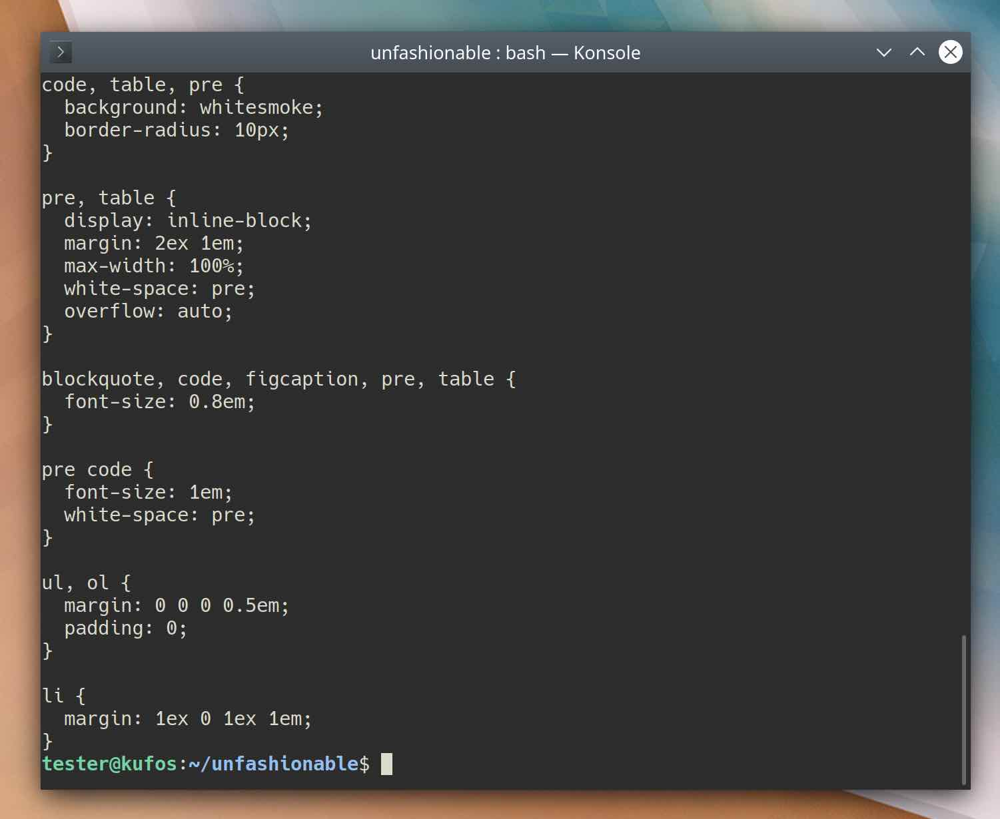
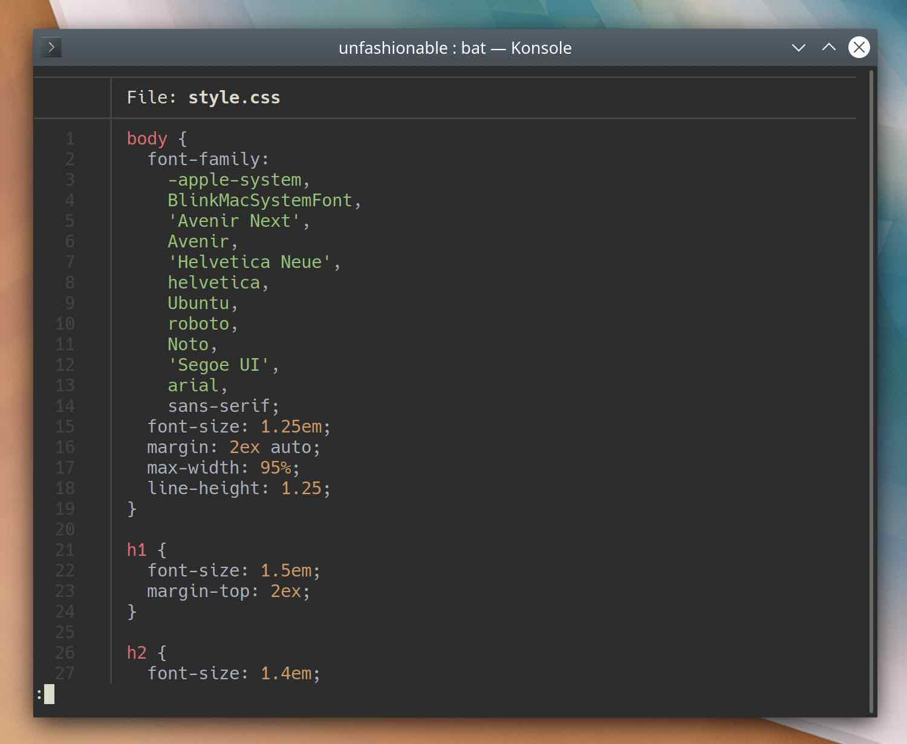
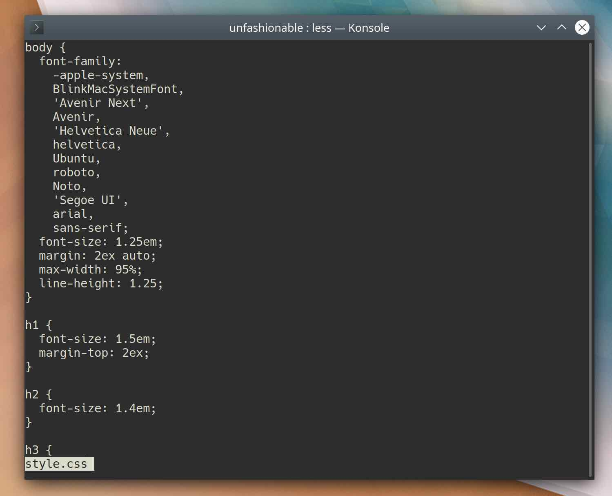
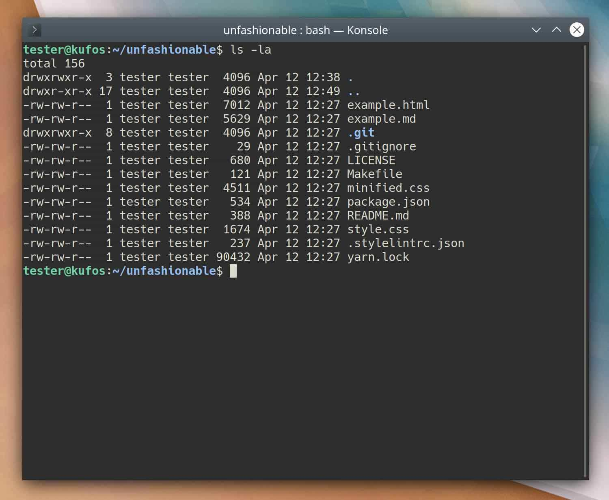
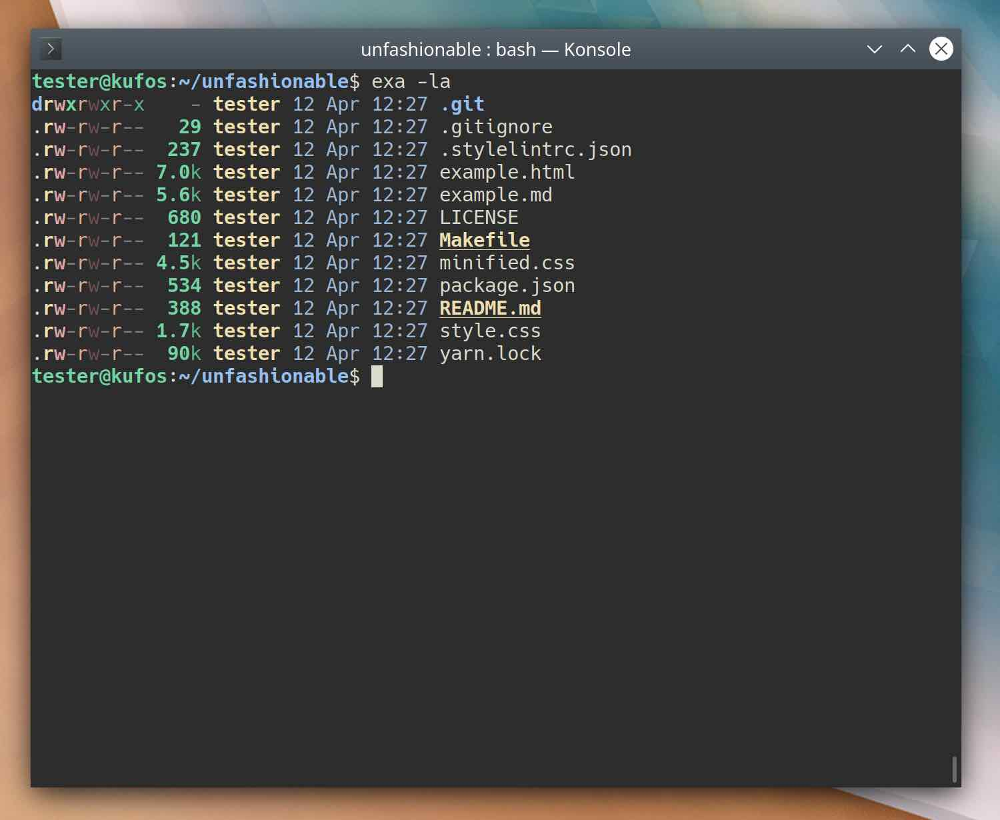
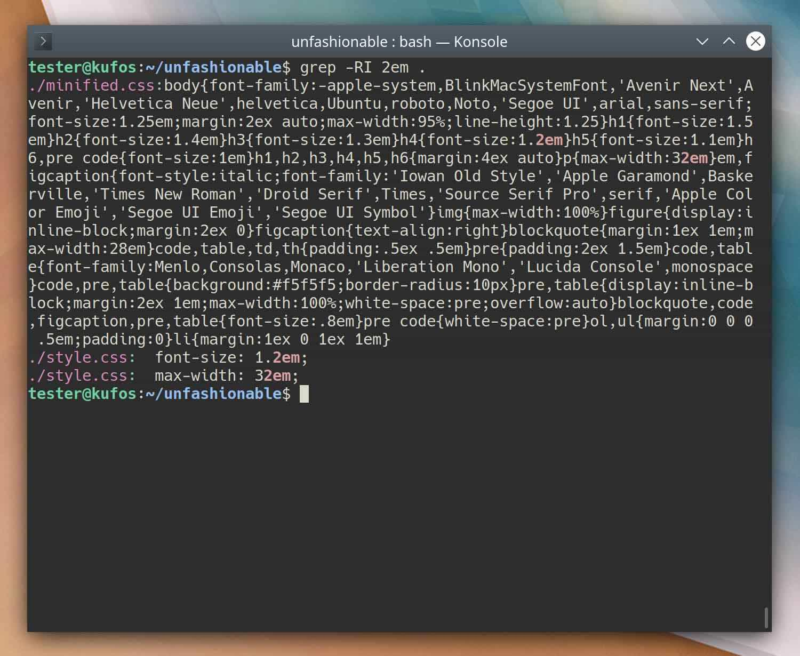
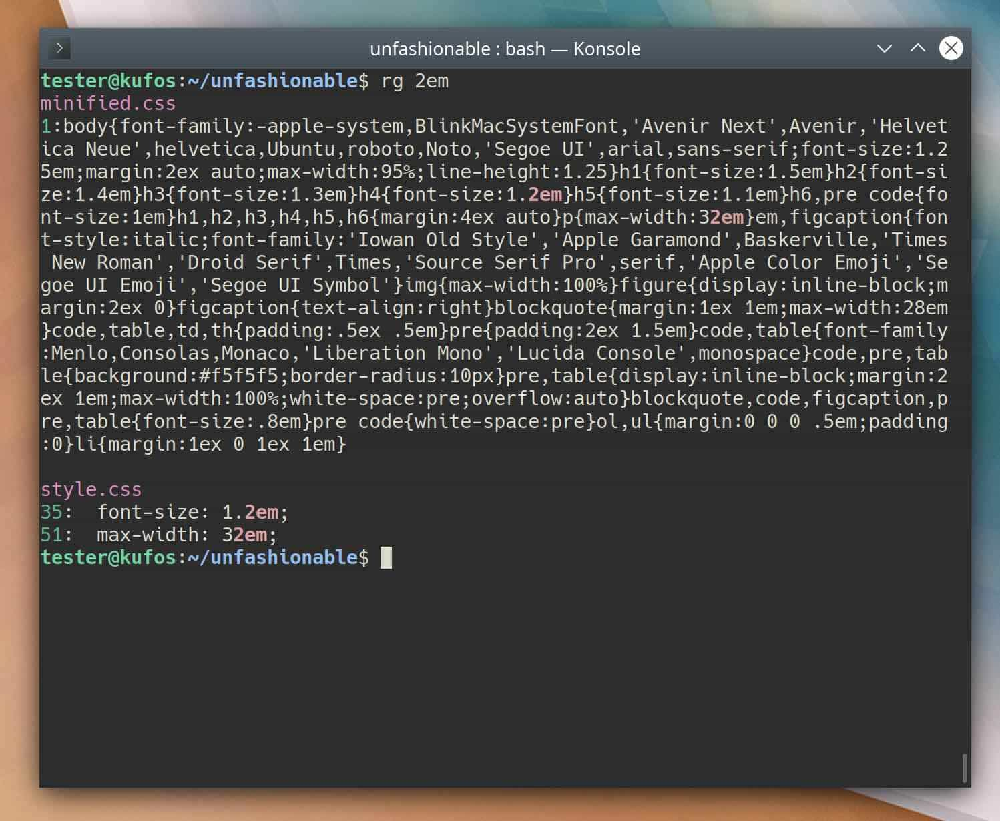

Rusting tools
There are many classic command line tools known for their gotchas. The flags for some are famously cryptic, and arcana rest buried in the heart of Unix. A few Rust developers have decided to refresh the scene with new attempts at solving these epoch-old problems. These new tools are not likely to displace programs that have decades of use in production behind them, but they can make working in the terminal far more ergonomic:
Finding a new way
Consider the case of the venerable find. Which of these two commands is more intuitive?
############
# Option 1 #
############
$ find . -name '*.md'
./node_modules/unfashionable/README.md
./README.md
./src/one-small-step-for-man.md
./src/spinning-tops.md
./src/a-hop-skip-and-a-jump.md
./src/index.md
./src/about.md
############
# Option 2 #
############
$ find --extension md
README.md
src/a-hop-skip-and-a-jump.md
src/about.md
src/index.md
src/one-small-step-for-man.md
src/spinning-tops.md
Option 1 specifies the target directory, uses a single-hyphen but word-length flag, then takes a quoted glob. Option 1 also searches everywhere, including in the node_modules/ directory. Finally, Option 1 prepends ./ on all the output. Option 2 takes a double-hyphen word argument and the extension to search for. It colors directories like ls, simplifies output and ignores whatever is in the project’s .gitignore file. Option 1 is the classic find utility, and Option 2 is the new fd. As the README puts it:
fd is a simple, fast and user-friendly alternative to find.
While it does not seek to mirror all of find’s powerful functionality, it provides sensible (opinionated) defaults for 80% of the use cases.
For any interactive use, fd is a clear winner.
Theory of cats
Does it matter if a cat black and white?
cat
bat
bat is more functional, easier to read, more flexible, and only 1ms slower than classic cat. Turning once again to the project’s README:
bat tries to achieve the following goals:
- Provide beautiful, advanced syntax highlighting
- Integrate with Git to show file modifications
- Be a drop-in replacement for (POSIX) cat
- Offer a user-friendly command-line interface
bat can also serve as $PAGER, replacing more or less:
less
Listless lists
And yes, even ls has been improved:
ls
exa
A final blurb:
You list files hundreds of times a day. Why spend your time squinting at black and white text?
exa is an improved file lister with more features and better defaults. It uses colours to distinguish file types and metadata. It knows about symlinks, extended attributes, and Git. And it’s small, fast, and just one single binary.
R.I.P grep
Searching at the command line has lots of alternatives. ripgrep blows them away. The project documents the features and advantages so extensively that for the sake of time, just go try it out:
grep
ripgrep
Round-up
These new tools require no configuration, get out of the user’s way, and are broadly compatible with the standard programs they replace. I’ve gone so far as to alias most of the old to the new, and in about a year of working with them I’ve had no issues. For developers in particular, the git integrations and streamlined flags alone are worth switching.